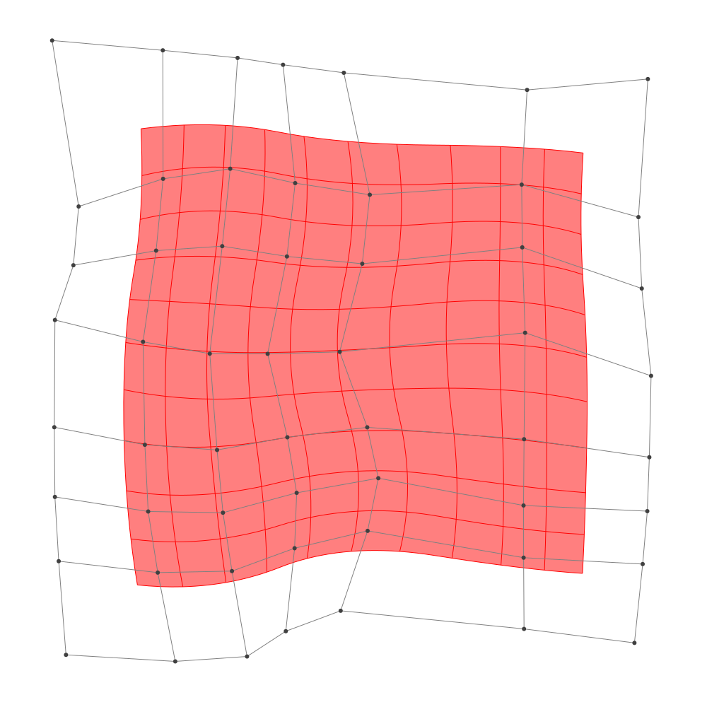
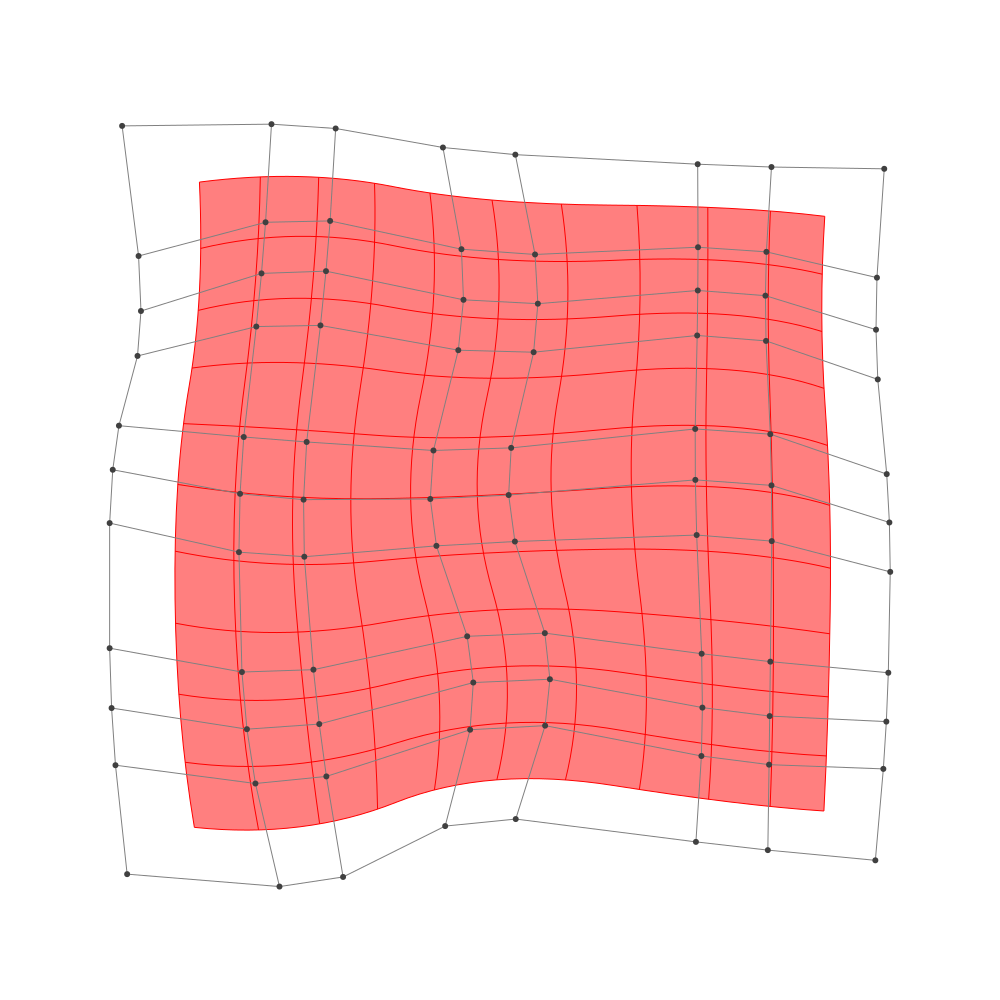

Refinement
BasicBSpline.refinement — FunctionRefinement of B-spline manifold with given B-spline spaces.
julia> p = 2 # degree of polynomial2julia> k = KnotVector(1:8) # knot vectorKnotVector([1, 2, 3, 4, 5, 6, 7, 8])julia> P = BSplineSpace{p}(k) # B-spline spaceBSplineSpace{2, Int64}(KnotVector([1, 2, 3, 4, 5, 6, 7, 8]))julia> rand_a = [SVector(rand(), rand()) for i in 1:dim(P), j in 1:dim(P)]5×5 Matrix{StaticArrays.SVector{2, Float64}}: [0.433415, 0.237613] [0.261877, 0.445621] … [0.23728, 0.92728] [0.811225, 0.0953452] [0.268553, 0.127151] [0.645966, 0.713272] [0.0301469, 0.889896] [0.737143, 0.795999] [0.0750265, 0.49742] [0.912043, 0.604405] [0.902346, 0.283888] [0.955298, 0.22814] [0.473754, 0.406759] [0.667834, 0.265088] [0.663688, 0.381749]julia> a = [SVector(2*i-6.5, 2*j-6.5) for i in 1:dim(P), j in 1:dim(P)] + rand_a # random5×5 Matrix{StaticArrays.SVector{2, Float64}}: [-4.06659, -4.26239] [-4.23812, -2.05438] … [-4.26272, 4.42728] [-1.68877, -4.40465] [-2.23145, -2.37285] [-1.85403, 4.21327] [-0.469853, -3.6101] [0.237143, -1.704] [-0.424973, 3.99742] [2.41204, -3.89559] [2.40235, -2.21611] [2.4553, 3.72814] [3.97375, -4.09324] [4.16783, -2.23491] [4.16369, 3.88175]julia> M = BSplineManifold(a,(P,P)) # Define B-spline manifoldBSplineManifold{2, (2, 2), StaticArrays.SVector{2, Float64}, Tuple{BSplineSpace{2, Int64}, BSplineSpace{2, Int64}}}((BSplineSpace{2, Int64}(KnotVector([1, 2, 3, 4, 5, 6, 7, 8])), BSplineSpace{2, Int64}(KnotVector([1, 2, 3, 4, 5, 6, 7, 8]))), StaticArrays.SVector{2, Float64}[[-4.06658507333025, -4.26238671128742] [-4.238123123813711, -2.054378518121111] … [-3.821333203229642, 1.6650265361029222] [-4.262719913323463, 4.427280376964189]; [-1.688774740180523, -4.404654771878802] [-2.231447460873442, -2.3728489523214025] … [-2.0846607822755514, 2.410995027479973] [-1.8540335629574725, 4.213272468037897]; … ; [2.412043193899823, -3.895594955840626] [2.402345920615032, -2.216111521164028] … [2.365219573979859, 2.151865377483613] [2.4552981790567605, 3.728139989113936]; [3.9737542155231624, -4.093240627276967] [4.1678336968845695, -2.234911841910332] … [4.006486735262494, 1.5847496455518955] [4.163688268573898, 3.881749463490788]])
h-refinemnet
Insert additional knots to knot vector.
julia> k₊=(KnotVector(3.3,4.2),KnotVector(3.8,3.2,5.3)) # additional knotvectors(KnotVector([3.3, 4.2]), KnotVector([3.2, 3.8, 5.3]))julia> M_h = refinement(M,k₊=k₊) # refinement of B-spline manifoldBSplineManifold{2, (2, 2), StaticArrays.SVector{2, Float64}, Tuple{BSplineSpace{2, Float64}, BSplineSpace{2, Float64}}}((BSplineSpace{2, Float64}(KnotVector([1.0, 2.0, 3.0, 3.3, 4.0, 4.2, 5.0, 6.0, 7.0, 8.0])), BSplineSpace{2, Float64}(KnotVector([1.0, 2.0, 3.0, 3.2, 3.8, 4.0, 5.0, 5.3, 6.0, 7.0, 8.0]))), StaticArrays.SVector{2, Float64}[[-4.06658507333025, -4.26238671128742] [-4.169507903620326, -2.9375817953876346] … [-3.8875412097437154, 2.079364612232112] [-4.262719913323463, 4.427280376964189]; [-2.521008356782928, -4.354860950671818] [-2.768673708454693, -3.098774960479507] … [-2.6931827780058963, 2.470646432597619] [-2.6970737855855695, 4.2881752361620995]; … ; [2.412043193899823, -3.895594955840626] [2.4062248299289486, -2.8879048950346675] … [2.378731364741394, 2.3883065692281615] [2.4552981790567605, 3.728139989113936]; [3.9737542155231624, -4.093240627276967] [4.090201904340007, -2.9782433560569856] … [4.030066965259205, 1.929299618242729] [4.163688268573898, 3.881749463490788]])julia> save_png("2dim_h-refinement.png", M_h) # save image

Note that this shape and the last shape are identical.
p-refinemnet
Increase the polynomial degree of B-spline manifold.
julia> p₊=(1,2) # additional degrees(1, 2)julia> M_p = refinement(M,p₊=p₊) # refinement of B-spline manifoldBSplineManifold{2, (3, 4), StaticArrays.SVector{2, Float64}, Tuple{BSplineSpace{3, Int64}, BSplineSpace{4, Int64}}}((BSplineSpace{3, Int64}(KnotVector([1, 2, 3, 3, 4, 4, 5, 5, 6, 6, 7, 8])), BSplineSpace{4, Int64}(KnotVector([1, 2, 3, 3, 3, 4, 4, 4, 5, 5, 5, 6, 6, 6, 7, 8]))), StaticArrays.SVector{2, Float64}[[-3.7286318083515577, -3.741437771994779] [-3.8453287227774067, -2.652117206545699] … [-3.6142338968685865, 2.4399190615351083] [-3.7789260911311717, 3.74104794860713]; [-2.2052806979533144, -3.8656502079905186] [-2.445689169115651, -2.8350637670777408] … [-2.3444499613305427, 2.777235322402585] [-2.2851375124558277, 3.7583720760401587]; … ; [2.6783947439594415, -3.5012131527987824] [2.6905275035375613, -2.6465676562363125] … [2.664080540805961, 2.4814449586654312] [2.7147134206972874, 3.32964269833964]; [3.753498217482701, -3.6031693753080045] [3.8335565619428857, -2.688908761848855] … [3.7694458030334683, 2.2234886717623814] [3.8424529923362956, 3.3119281468727806]])julia> save_png("2dim_p-refinement.png", M_p) # save image

Note that this shape and the last shape are identical.